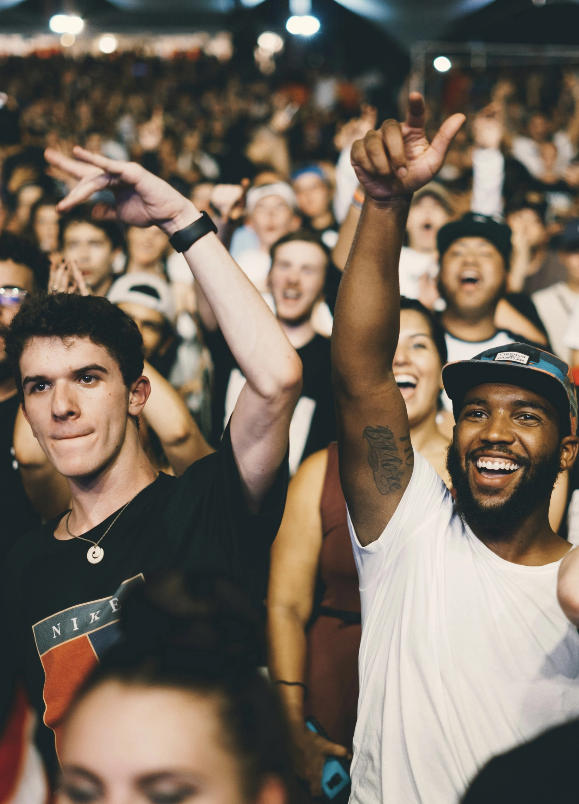

No — Backup is not a dating or escort service. We provide social companions for events, not romantic or intimate services. Think of it as bringing a confident, friendly plus-one who helps you feel comfortable and enjoy the moment.
About

What is backup?
It is a social rental platform built for modern life.
We believe no one should miss out on experiences — whether it’s a wedding invitation, a networking event at your work, a party, or simply a Friday night that feels too quiet.
Through backup, you can hire a carefully selected companion to join you at events, explore the city, create great memories — or even capture the perfect social media moment.
Life doesn’t always go as planned. But with backup, you’ve still got a card up your sleeve.
How does it work?
- 1. Create your profile in seconds
- 2. Find the perfect companion for your vibe and event
- 3. Book your companion effortlessly
- 4. Enjoy your event with the perfect backup by your side

FAQ
Is this a dating or escort service?
Who are the companions on backup?
Our companions are carefully selected individuals who are:
- Friendly and socially skilled
- Reliable and professional
- Comfortable in a variety of social settings
All companions go through a verification process to ensure a safe and high-quality experience.
Can I chat with my companion?
Yes! After booking, you’ll be able to communicate with your companion through the platform. This allows you to:
- Coordinate details
- Share expectations
- Get on the same page before the event
What if we don’t “click” in real life?
We do our best to help you find a great match, but we understand that chemistry can’t be guaranteed.
Our companions are experienced in social situations and will always remain friendly, respectful, and professional — even if the vibe isn’t perfect.
In most cases, they’ll help carry the conversation and make the situation comfortable regardless.
How far in advance should I book?
We recommend booking as early as possible to ensure availability. That said, we also understand that life happens — and sometimes you need a plus-one fast. Last-minute bookings may be available depending on location and demand.
Do companions travel to my location?
Yes, companions can travel to your event location. Travel is typically included within a certain area, which will be clearly stated during booking. For longer distances, additional costs may apply.
What happens if my companion cancels?
In the rare case that a companion needs to cancel, we’ve got
your back.
We will:
- Help you find a replacement companion as quickly as possible
- Or offer a full refund if no suitable match is available
Our goal is to make sure you’re never left without a plus-one.
Is it normal to hire a plus-one?
More normal than you might think
Whether it’s avoiding awkward questions at a wedding, having
someone to talk to at a work event, or just feeling more
confident — many people use services like Backup. At the end of
the day, it’s about making social situations easier and more
enjoyable.